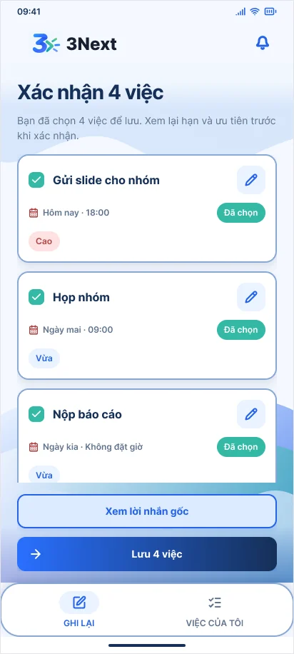
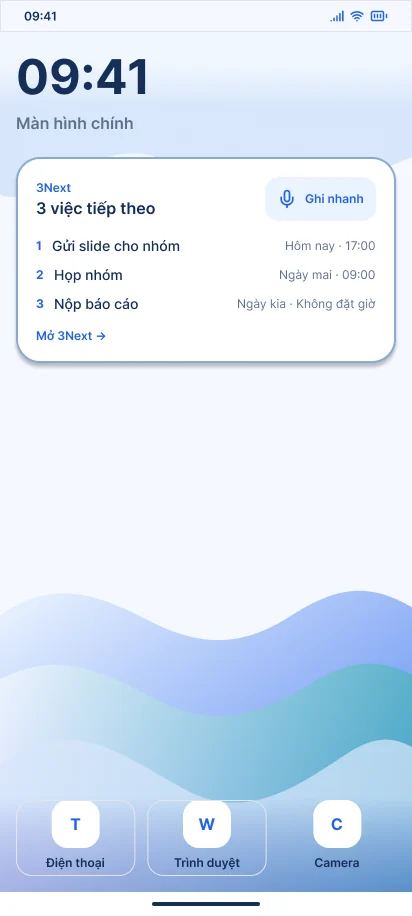
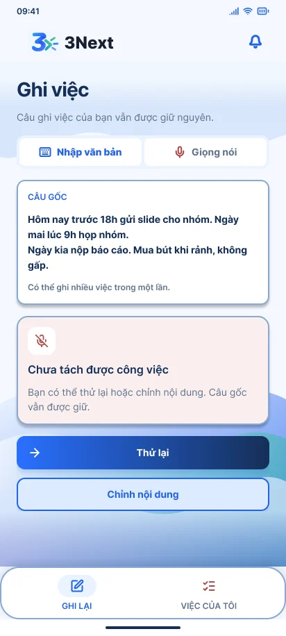
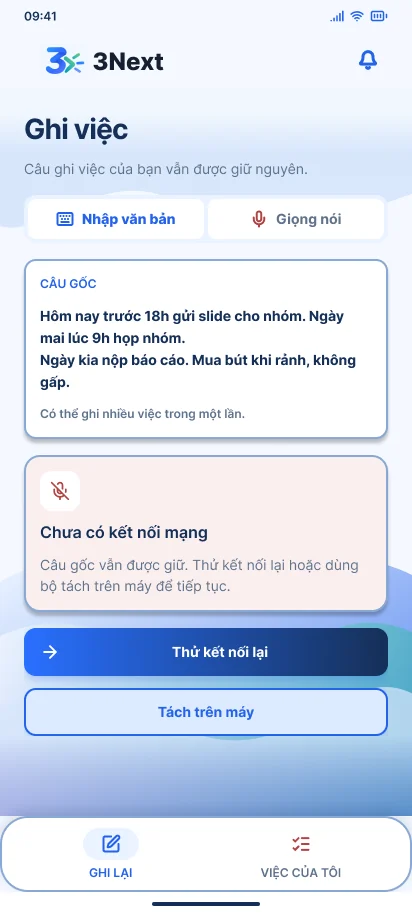
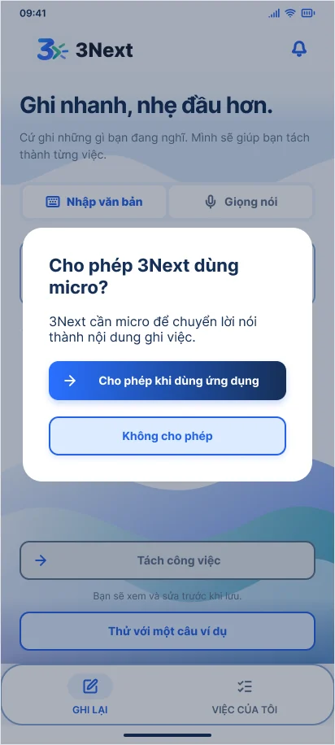

Nói một câu, biết ngay 3 việc cần làm tiếp.
Deadline đến từ lớp học, nhóm chat, LMS và email. 3Next giúp bạn ghi nhanh bằng chữ hoặc giọng nói, tách thành từng việc, rồi luôn cho biết nên làm gì trước.
Capture less. Think less. Know what to do next.
- Hoàn thành
Khảo sát 14 sinh viên và xác định hướng sản phẩm - Hoàn thành
Thiết kế giao diện và prototype tương tác trên Figma - Đang làm
Kiểm thử prototype với người dùng ngoài nhóm - Sắp tới
Ứng dụng Android hoàn chỉnh và widget (đã có bản demo widget và API)
Việc đến từ khắp nơi, còn bạn phải tự gom và tự chọn.
Dành cho sinh viên đại học có lịch dày, nhiều deadline chồng nhau, thường nhận việc ngay lúc đi đường hoặc giữa giờ học, khi không tiện mở app phức tạp.
Không có một nơi duy nhất, nên việc rải rác và dễ sót.
Ghi lại chưa đủ, các bạn còn mất công sắp xếp thứ tự mỗi lần.
Nguồn: khảo sát Google Form của nhóm với 14 sinh viên (10/2026). Mẫu nhỏ, chỉ mang tính tham khảo.
Không chỉ ghi nhanh. 3Next chọn giúp việc tiếp theo.
Nhiều app đã cho ghi bằng giọng nói. Khác biệt của 3Next nằm ở bước sau đó: AI đề xuất, bạn vẫn là người quyết định, và app luôn nói rõ vì sao việc này xếp trước.
Ghi nhanh
Gõ hoặc nói một câu tự nhiên, có thể chứa nhiều việc: "Hôm nay trước 18h gửi slide, mai 9h họp nhóm, mua bút khi rảnh".
Xem lại và xác nhận
AI tách thành từng việc kèm hạn và mức ưu tiên. Bạn sửa hoặc bỏ bớt trước khi lưu, nên không sợ AI hiểu sai.
Biết ngay 3 việc tiếp theo
Danh sách luôn gọn, kèm lý do như "đến hạn sớm nhất hôm nay". Xong việc nào, việc tiếp theo hiện lên.
Đủ dùng cho một ngày bận, không thừa.
Ghi bằng chữ hoặc giọng nói
Chọn cách hợp tình huống. Khi ồn hoặc ở lớp, chuyển sang gõ chữ ngay.
AI tách việc, hạn và ưu tiên
Hiểu cách nói tiếng Việt như "mai", "thứ 6", "7h30 tối", "không gấp".
Sửa trước khi lưu
Bạn giữ quyền kiểm soát. Chỉnh hạn, ưu tiên hoặc bỏ việc không muốn lưu.
Top 3 kèm lý do
Chỉ hiện việc quan trọng nhất, thay vì một danh sách dài gây rối.
Widget màn hình chính
Xem 3 việc ngay trên Android và bấm để hoàn thành, không cần mở app.
Nhắc việc sắp đến hạn
Thông báo đúng lúc, mở lên là thấy ngay việc cần làm.
Xử lý lỗi nhẹ nhàng
Lỗi tách việc hay mất mạng đều giữ nguyên câu gốc, cho thử lại hoặc tách ngay trên máy.
Xin quyền rõ ràng
Giải thích vì sao cần micro. Từ chối vẫn dùng được bằng cách gõ chữ.
Hoàn thành và hoàn tác
Một chạm để xong việc, và hoàn tác được nếu bấm nhầm.
Một số màn hình trong prototype.
Thiết kế trên Figma, gồm cả trạng thái lỗi, mất mạng và xin quyền. Bấm "Xem prototype" để tự thử các luồng.





Xem thiết kế và tài liệu dự án.
Prototype trên Figma
Prototype tương tác với 9 điểm bắt đầu cho từng luồng, từ ghi việc, widget đến lỗi và mất mạng.
Case study trên Behance
Câu chuyện thiết kế: vấn đề, quyết định, design system và kết quả kiểm thử với người dùng.
Tài liệu và mã nguồn
Wiki ghi lại nghiên cứu, quyết định sản phẩm và kế hoạch. Mã nguồn có trên GitHub.